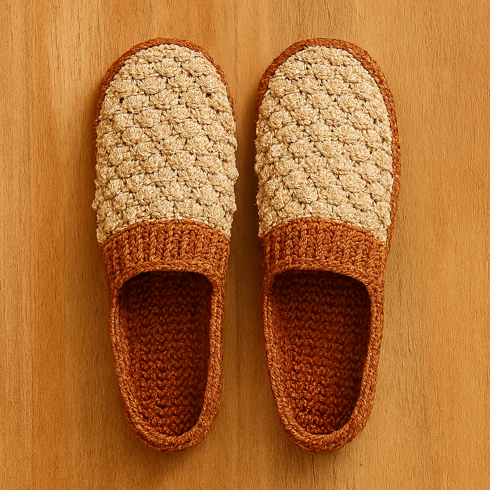
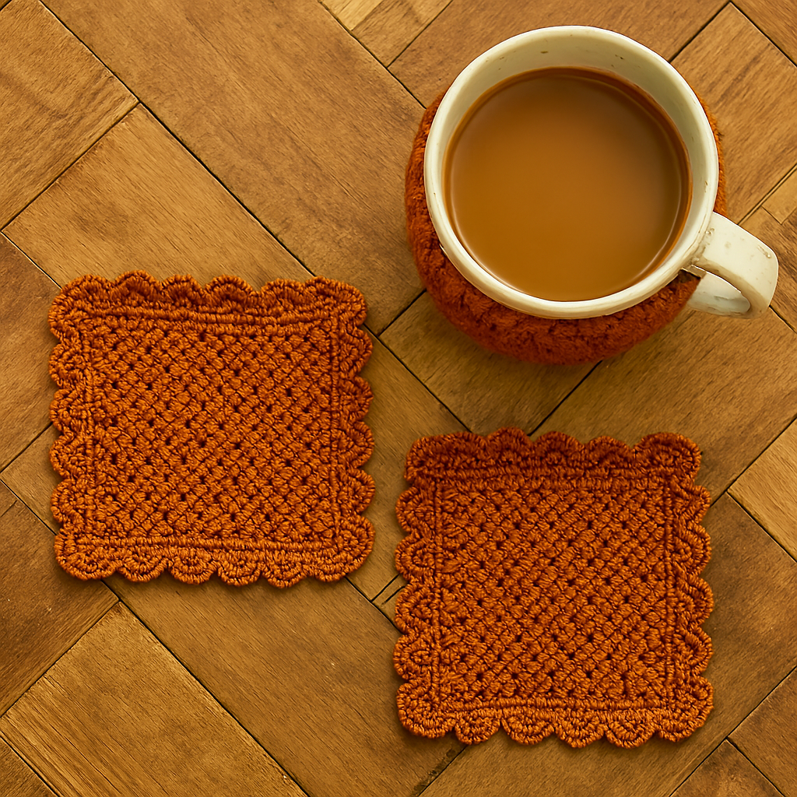
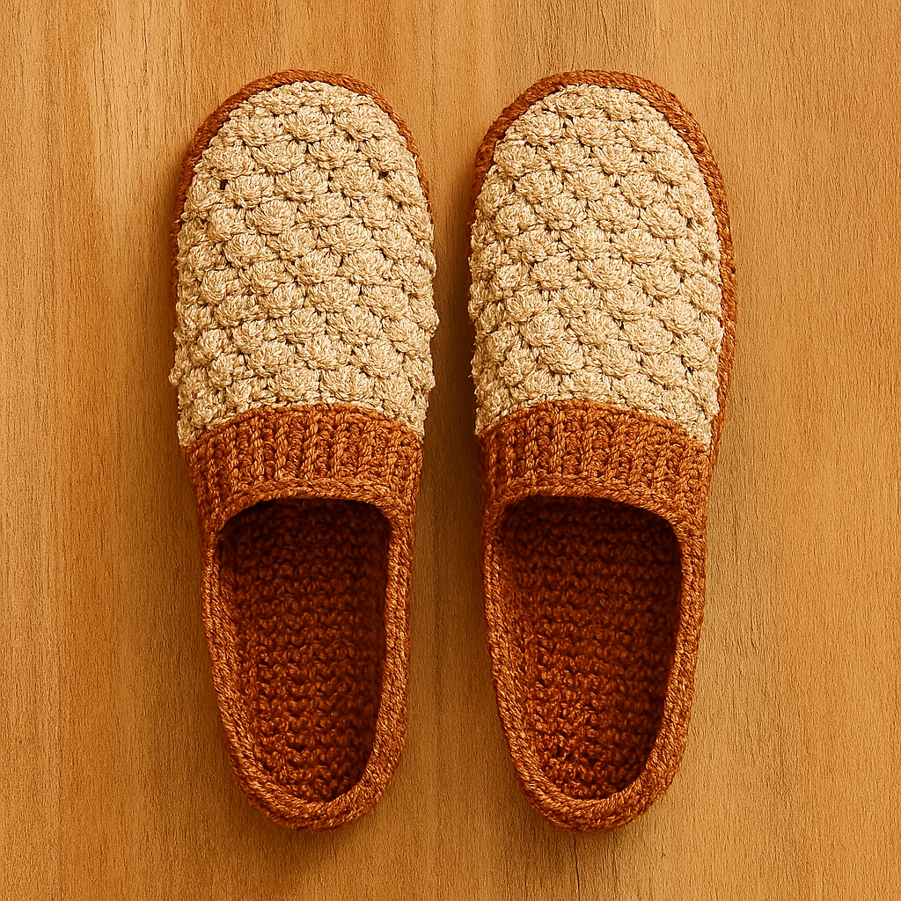
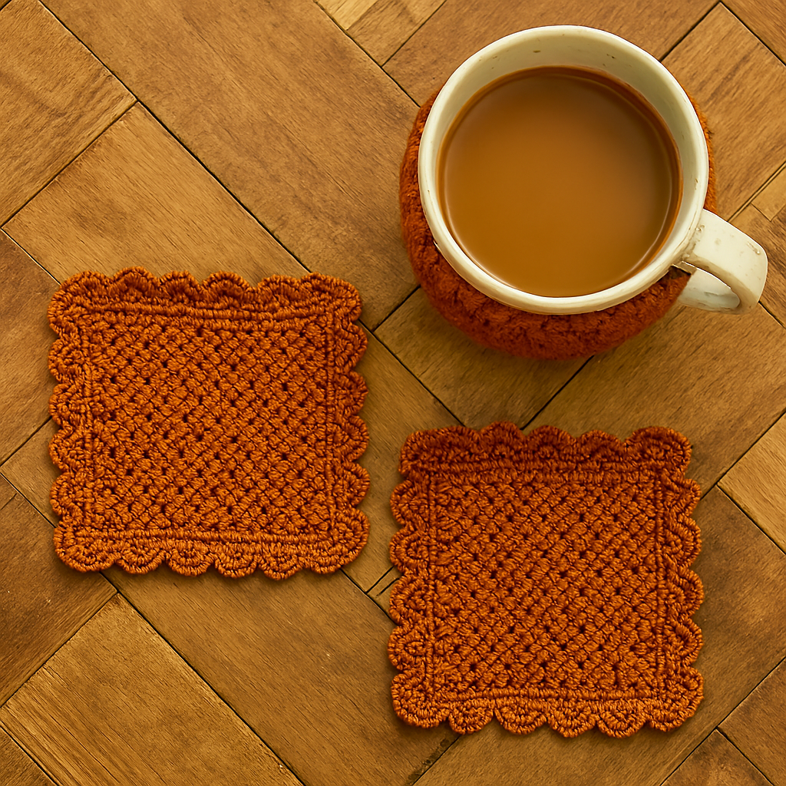
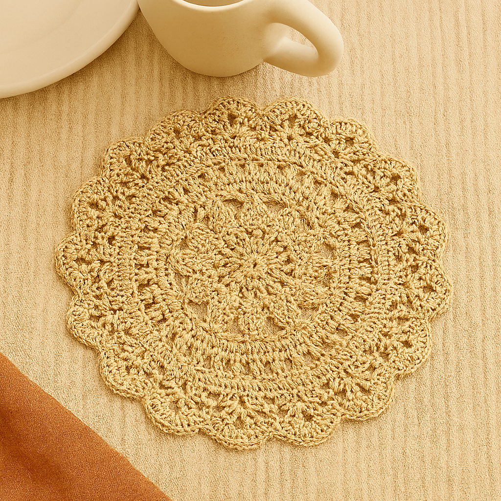
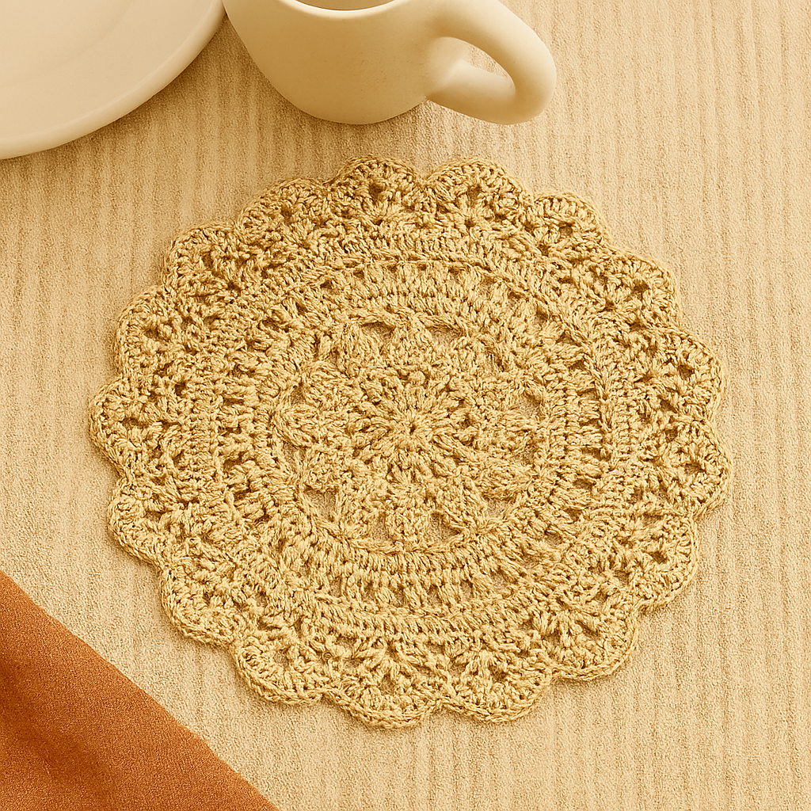

About Us

The Crochet Philippines is more than a hashtag or a hobby—it's a growing community of Filipino makers
who stitch
stories, culture, and creativity into every loop.
We celebrate crocheters from all walks of life: from quiet beginners learning their first chain stitch
to seasoned
artists crafting intricate heirlooms. Each piece is a reflection of patience, passion, and personal
expression. And
together, we form a tapestry of voices that uplift, inspire, and connect.
This space was designed to showcase the diversity of our craft—through colors, textures, and the stories
behind each
creation. Whether you crochet for healing, for hustle, or for heritage, you belong here.
We believe in:
- Authentic representation—every maker's style and story matters
- Creative freedom—there's no one way to be a crocheter
- Community over competition—we lift each other up
- Cultural pride—our roots shape our threads
So welcome, maker. Your yarn has a place here. Your voice adds to the pattern. And your hands help build something beautiful.
Community Highlights
Here's a glimpse into the vibrant creations of our members. Each piece reflects the maker’s unique style, story, and spirit.
 




 
